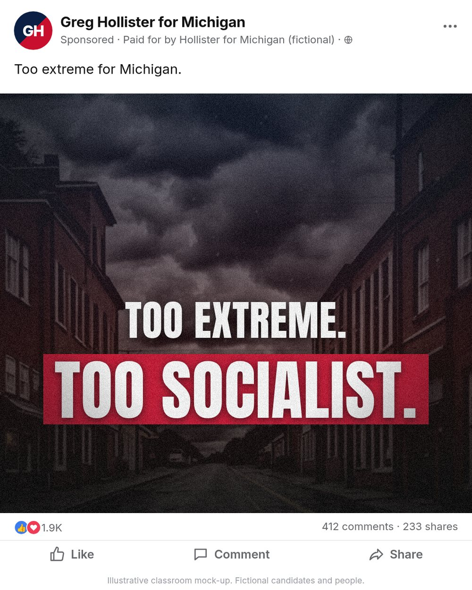
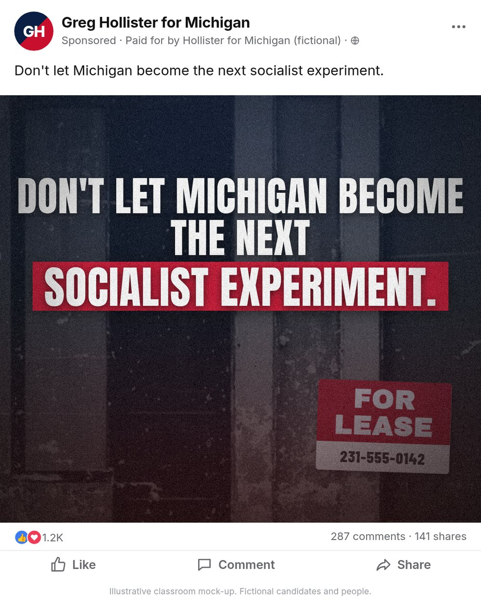
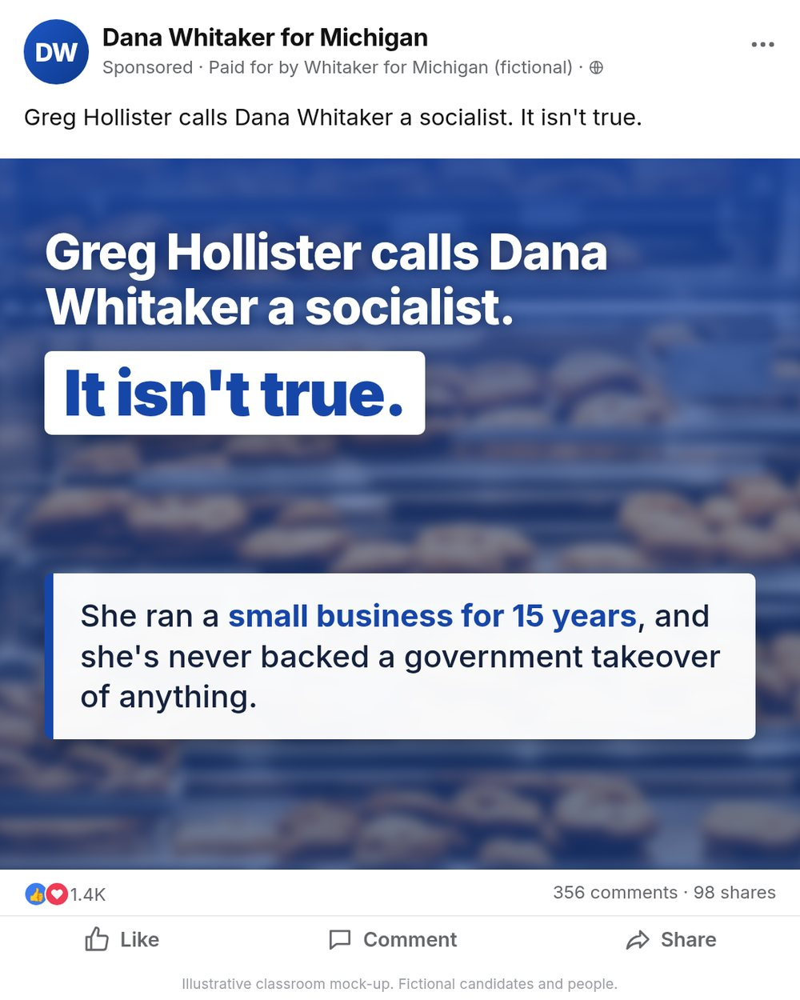
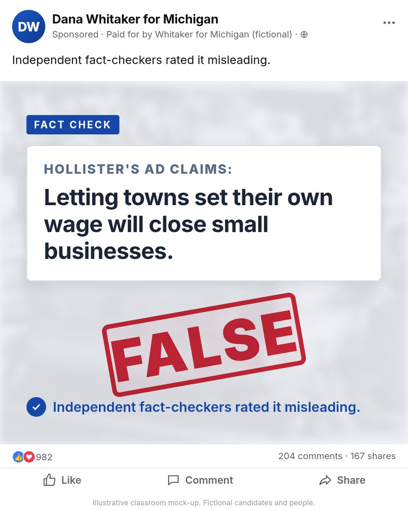
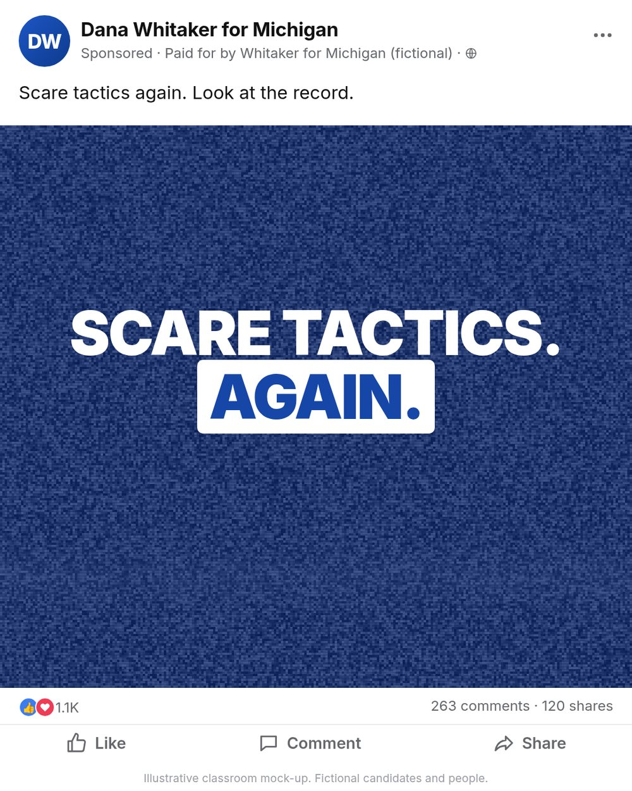
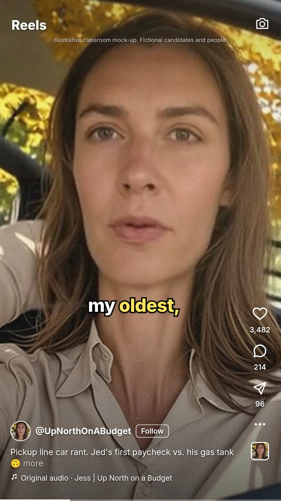
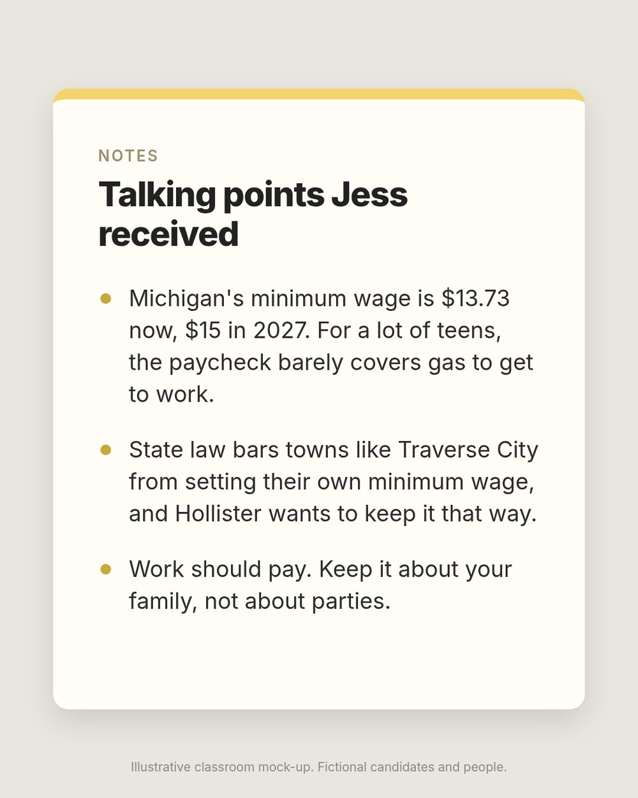
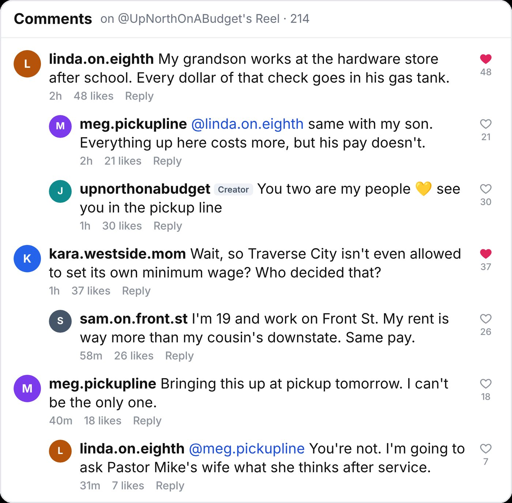
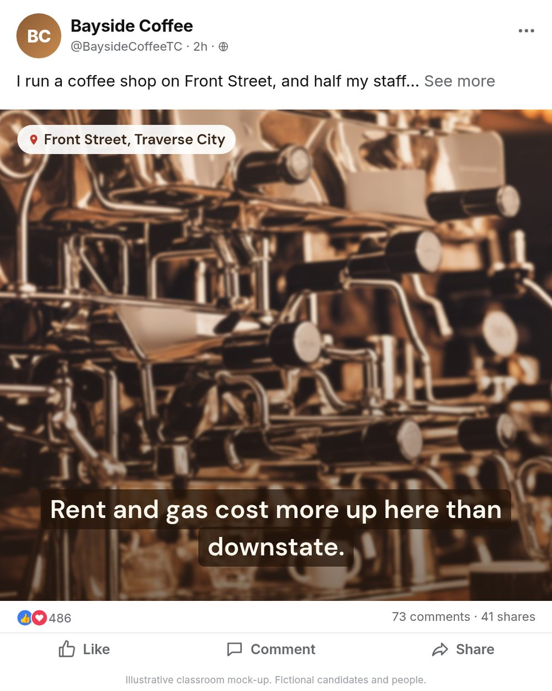
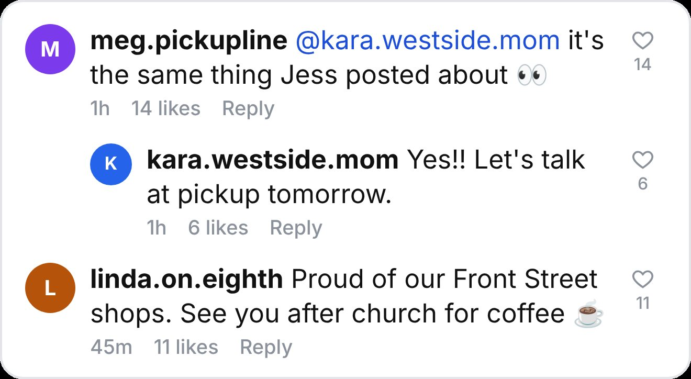

Build a member network for the centrist majority
Recruit advocates and community voices who align with our candidates and programs, give them access and distribution support, and measure participation across every level of the election map.
“Access, context, and amplification for members who champion our candidates and programs in their own words.”
Operating principles
Aligned
Membership and access are for people who champion the candidates and programs we support, in their own voice.
Consent-based
Collect geography, topics, and platform handles directly from participants. Do not infer political beliefs from browsing, race, religion, or private data.
Member-controlled voice
Members choose which supported candidates and programs to champion and write in their own words. Cross-posting and boosting require per-account authorization, clear budgets, and a revocation path.
Member journey: an outreach-led funnel
This program is built on direct outreach — we go to advocates where they already publish. Referrals from existing members are the second engine. Events and inbound applications exist, but they are a small minority of recruitment and are never treated as a growth plan.
Recruitment mix (planning targets)
Relationship owners DM and email researched prospects daily per the DM Playbooks. This is the engine — proactive, targetable by geography and issue, and fully measurable.
Every onboarded advocate is asked for two names at day 30. Referrals convert at 2–3× the cold rate and arrive pre-aligned.
Signups at our own events and people who find the program page. Valuable but passive — never forecast growth from this lane.
The eight steps
Two recruitment targets, one standard
- Consistent publishing cadence and an identifiable audience.
- Reached almost exclusively by direct outreach — DM, email, or manager contact.
- Offer rapid-response access, production assets, expert briefings, and co-distribution.
- Left-leaning people who care about an issue — environment, economy, schools — but are not politically active.
- Reached by outreach into interest communities and by member referrals.
- Offer a low-lift on-ramp: see the Outreach section for the dedicated pitch.
Outreach system: personal at the front, disciplined underneath
Every touch lands in the member CRM — options and costs itemized in Software.
| Stage | Owner | System action | Human action | Exit criterion |
|---|---|---|---|---|
| Prospect | Research | Create profile with source and public handles | Verify identity and relevance | No major authenticity or safety concern |
| Approach | Relationship lead | Assign owner; start consent-safe sequence | Send a specific, personal invitation | Reply or three respectful attempts |
| Conversation | Relationship lead | Log interests, geography, and constraints | 15-minute fit call; confirm alignment | Mutual expectations are clear |
| Onboarding | Member ops | Capture agreement, preferences, and access tier | Orientation and platform connection | Profile, alignment statement, and consent recorded |
| Active | Program lead | Match opportunities by declared preferences | Offer access tied to supported candidates and programs | Member accepts or declines |
| Alumni / pause | Member ops | Stop outreach and revoke tokens as requested | Thank them; preserve a return path | Consent and retention rules applied |
First-contact anatomy
- Why them: cite one specific public contribution or community connection.
- What this is: a member network for people who support the candidates and programs we back; amplification may be funded.
- The condition: membership and access are for people who champion those candidates and programs.
- What they control: which supported items to champion, what to say in their own words, and whether any post is boosted or cross-posted.
- What they receive: briefings, candidate access, peer network, source material, training, and distribution support.
- What happens next: a short fit call to confirm alignment.
Two pitches, two audiences
The structure is identical; the hook changes. Advocates respond to access and distribution. Non-activists respond to their issue and a low-lift ask.
“Your recent work on [specific local issue] helped people understand the tradeoffs without talking down to them. We are building a member network for people who support [candidate/program] and want briefings and occasional candidate Q&As. You always write in your own words and choose what to back. Would you be open to a 15-minute conversation?”
“I saw your post about [environment / housing / schools / the economy] — it sounded like it came from actual experience, not talking points. I help run a network of people who care about [issue] and want to actually move it, without becoming full-time political people. Members get plain-English briefings on what's really happening, and occasionally a chance to ask questions directly to the people making decisions. No posting quota, no meetings culture — most members give it an hour or two a month. Can I send you the one-pager?”
Cadence and service levels
- Named relationship owner
- Personal email or manager contact
- Two follow-ups over 14 days
- Quarterly relationship review
- Warm introduction
- Mobile application
- Weekly orientation
- Local coordinator follow-up
- Immediate confirmation
- Review within five business days
- Published criteria
- Appeal and reapply path
DM playbooks: who sends what, where, and how
Direct messages are the highest-converting outreach channel and the fastest way to get an account restricted. Every send comes from a named human's account, references something specific, and stops the moment someone declines. Volume caps below are conservative operating limits, not platform-published maximums. Prospect lists and outcomes live in the CRM — see Software.
Roles
| Role | Headcount (pilot) | What they do | What they never do |
|---|---|---|---|
| Relationship owner | 2–3 staff | Send first-contact DMs from their own personal, named accounts (not the org's brand account — personal outreach converts far better); run fit calls; log every touch | Share logins, rotate accounts to dodge limits, or use automation to send |
| Member ops | 1 | Build prospect lists; pre-fill CRM records; also send outreach from their own named accounts when volume requires — every sender is a real, named person | Send from faceless brand accounts or unlogged personal accounts |
| Program lead | 1 | Approves target lists and message angles weekly; handles escalations and press-risk conversations | Mass-send |
| Compliance | 0.2 (fractional) | Reviews templates quarterly; approves any boosting language referenced in DMs | Edit messages mid-conversation |
How outreach is tracked — the software workflow
Messages are sent by hand from personal accounts, but every touch is tracked centrally. The stack below is what a sender touches each day (full pricing in Software).
| Step | Tool | What happens |
|---|---|---|
| 1. Prospect list | EveryAction (member CRM) | Member ops creates a prospect record: name, handles, geography, issue, source, assigned owner. Owners work from their assigned list only — no freelance prospecting. |
| 2. Before sending | GRIN (advocate CRM) | Owner opens the prospect in GRIN to see recent posts and pull the specific reference for the message. GRIN is the research surface; EveryAction is the record. |
| 3. Send | Native platform app | Owner sends the DM/email by hand from their own named account. No sending software touches the message — this is what keeps accounts healthy. |
| 4. Log | EveryAction via daily log form | Same day: owner pastes the thread URL, message version (A/B template code), and outcome (sent / replied / declined / call booked). A 10-field mobile form takes ~30 seconds per touch. |
| 5. Sync & dedupe | Make (automation) | Nightly job reconciles GRIN activity with EveryAction records, flags prospects contacted twice, and surfaces follow-ups due at day 5–7. |
| 6. Review | Sprout Social inbox + Metabase dashboard | Program lead reviews reply rates by owner, platform, and template weekly; Metabase shows funnel from first touch to onboarded member. |
TikTok
YouTube
X (Twitter), Facebook, LinkedIn
| Platform | DM access | Playbook | Daily cap / notes |
|---|---|---|---|
| X | Open DMs only if the account allows them; Premium accounts can DM more broadly | Reply substantively to a recent post first; DM only accounts with open DMs or Premium; otherwise @-mention once with a link to the program page | ~10–15 new threads/day; rate limits tighten without warning on new accounts |
| Page-to-person DMs only after the person messages the Page first; person-to-person requires friendship | Route prospects to message the program Page via a comment or post link; respond within Messenger from the Page inbox | Meta enforces a 24-hour reply window for Pages — staff the inbox daily | |
| Connection-required; InMail is paid (~$80–160/seat/mo for Recruiter/Sales Navigator tiers) | Best channel for established activists, operatives, and org leaders — send a connection request with a 2-sentence note, then the standard message after acceptance | Connection notes capped at 300 characters; ~20 requests/day on free accounts |
Message anatomy and templates
“Hi [name] — your [specific post/video] on [topic] was one of the few takes on this that didn't talk down to people. I run member recruitment for a network that gets community voices briefings and occasional Q&As with [candidates/program leaders]. It's for people who support [candidate/program]. Open to a 15-minute call this week?”
“Bumping this once — we're hosting a briefing on [topic/date] and your perspective on [their issue] would be valuable in the room. If it's not a fit, no worries and I won't keep messaging.”
Operating guardrails
- 10–15 new-thread DMs per account per day, per platform.
- Two contact attempts max, then close the record.
- Three owner accounts × 15/day ≈ 900–1,300 first touches/month.
- Named human accounts only — no shared logins, no sending bots, no bought accounts.
- A platform restriction or block wave triggers a 48-hour pause and template review.
- Never rotate to a second account to evade a limit or a block.
- Every touch logged same-day: platform, handle, thread URL, message version, outcome.
- Declines and 'stop messaging' requests are honored everywhere, permanently.
- Weekly review: reply rate by platform, template, and owner; kill any template under 5% reply.
Issue briefings: what members actually receive
This is what a member actually gets: one page, checked facts, a plain-language angle, and two versions of the message so the sentiment tracking can show us which one people respond to. Advocates rewrite it in their own voice; non-activists can forward it or just show up to the meeting at the bottom. Anything in brackets gets filled in for the member's district before it goes out, and someone on staff re-checks the facts within 72 hours of send, because these things move.
How a briefing is built
Sample briefing: data centers in Arkansas
Quick version: the legislature passed a tax break for data centers in 2025. Now [utility] wants a rate increase to pay for the power plants these facilities need. People are starting to connect those two facts, and they're right to.
Where we land
Data centers are fine. Making Arkansans pay for their electricity isn't. And any deal should be public before it's signed.
The kitchen-table version
- A big data center can use as much electricity as tens of thousands of homes. Somebody has to pay to build that capacity. Right now the plan is that it's you, through your [utility] bill.
- The 2025 tax break is already law. What's still worth pushing on is basic: how many permanent jobs, what they pay, and what happens when the tax holiday ends.
- The biggest facilities also use serious water for cooling, millions of gallons a day at the top end. Arkansas farms. Asking "how much, from where" before construction starts is reasonable.
- None of this is anti-data-center. If a project is good for [county], the company should be able to say so in public, with numbers.
- If you do one thing, ask [your state rep / quorum court member] this: "If the power money comes up short, who pays, the company or us?" Get the answer in writing.
The harder version
“Your electric bill went up. At the same time, the state gave some of the richest companies on earth a tax break to come use even more electricity, and it didn't ask them to pay for the grid upgrades first. You're allowed to be annoyed about that.”
One thing to do
Post it in your own words this week, or send it to three people you know in the district. If you want to go further, the [public service commission / quorum court] hearing is [date]. Link is in the portal.
Sample briefing: clean water in Michigan
Quick version: Michigan has the strictest lead-pipe law in the country. Every lead service line in the state has to be replaced by 2041, and federal infrastructure money is covering a lot of the cost right now. The open question is whether small towns get their applications in before the money runs out.
Where we land
Nobody is pro-lead. The fight is over speed and money. Either the state and the towns hit the deadline or they let it slide, and letting it slide is a choice.
The kitchen-table version
- Benton Harbor replaced every lead line in its system in about a year and a half. It's doable when somebody is actually in charge of it.
- The Flint lesson wasn't only the water. It was a year of residents saying something was wrong and being told they were wrong. The standard now is simple: trust the water when the test results are public.
- There's federal money for pipe replacement, but towns have to apply. Whether yours gets any comes down to whether your local officials filed the paperwork. Worth an email to find out.
- PFAS is the next version of this fight. The forever-chemical contamination around [Rockford / Oscoda] has been sitting there for years.
- Every year a lead line stays in the ground is another year of risk and a bigger repair bill later. Waiting is the expensive option.
The harder version
“It's been more than a decade since Flint, and there are still Michigan kids drinking from lead pipes because replacing them was always in next year's budget. The state only moves when there's a deadline and a fine attached. That's what this law is.”
One thing to do
Share one of the points above in your own words, or bring it up at your next city council or school board meeting. Meeting links are in the portal.
See the conversation—within real platform limits
| Channel | What to collect | Preferred method | Important limit |
|---|---|---|---|
| Owned-post comments and metrics; tags; supported @mentions | Meta webhooks and Instagram APIs for professional accounts | Private content and some story/mention surfaces are unavailable; metrics may be delayed | |
| TikTok | Authorized advocate videos; public references found by approved listening tools | Advocate authorization plus vetted social-listening vendor | General comment access is restricted; Research API is not a normal campaign CRM feed |
| YouTube | Video/channel comments, replies, counts, and owned-channel moderation | YouTube Data API with OAuth for owned actions | Quota applies; comment threads may require extra calls for all replies |
| Other networks | Public mentions, owned-post engagement, and authorized account data | Official APIs or policy-compliant vendor connectors | Coverage changes frequently; document each connector's terms |
| Web/news/podcasts | Named references, links, transcripts, and coverage | Media monitoring plus manual verification | Automated sentiment is directional and error-prone |
Data flow
Dashboard views
- Relationship inbox: all known member posts and direct mentions requiring a response.
- Content performance: reach and engagement for authorized/cross-posted content, split organic versus boosted.
- Message lab: post-level and response-level sentiment by message variant (see below).
- Coverage gaps: geography and topic combinations with no active members—never inferred ideology.
- Audit view: consent, boost authorization, spend, token access, and retention status.
Message sentiment program
Every piece of program content carries a message-variant tag (e.g. positive framing vs. contrast framing). The listening stack scores sentiment on the post and on the response comments, so we can see which framing moves each audience. This is aggregate message testing on our own content — standard practice in Sprout Advanced and Brandwatch, both itemized in Software. We do not build covert political-affinity scores on individuals.
- Post-level sentiment: tone of the member's own content by variant, topic, and platform.
- Response-level sentiment: ratio of positive to negative replies per variant, per audience segment.
- Weekly readout: which framings earn constructive replies vs. backlash, by geography and issue.
- Decision rule: a variant must win on response sentiment AND completion/engagement to graduate.
Exclusive meetings: deter leaks; never promise prevention
Any attendee can use a second phone, screen-capture hardware, or handwritten notes. Design the event so a leak is less likely, identifiable where possible, and not catastrophic if it occurs. Platform options and pricing are in Software.
Meeting types and sensitivity tiers
Not all exclusive meetings carry the same risk. Set controls by tier, not by habit — over-securing a lobbyist briefing wastes goodwill, and under-securing a planning session hands the opposition our playbook.
| Type | Example | Sensitivity | Required controls |
|---|---|---|---|
| Candidate meet-and-greet | Advocates ask questions; candidate answers | Medium — assume anything quotable travels | Authenticated join, watermark, ground rules, publishable recap |
| Lobbyist / policy briefing | A lobbyist explains how they move an issue; members learn the mechanics | Low–medium — educational content, few secrets | Authenticated join, watermark; recap shareable at staff discretion |
| Activist strategy exchange | Peer advocates compare what is working in their communities | Medium — tactics are reusable by opponents | Authenticated join, watermark, no cloud recording, notes not distributed |
| Planning session | Staff + core members set targeting, budgets, timing, message sequencing | Highest — this is what the opposition most wants | Smallest viable invite list, in-person preferred, virtual only with watermark + no recording, verbal decisions, no circulated deck |
Technical controls
| Control | Implementation | What it accomplishes | Residual risk |
|---|---|---|---|
| Identity | SSO or one-time link, named registration, waiting room, manual approval | Reduces link sharing and anonymous entry | Credentials can still be shared |
| Event mode | Webinar/town-hall mode; attendee cameras/mics off until promoted | Limits disruption and participant visibility | Does not stop external recording |
| Recording controls | Disable participant local recording and cloud recording; restrict third-party bots | Removes ordinary in-app recording paths | OS capture and second devices remain |
| Watermarking | Participant-specific visual watermark; supported audio watermark | Deters leaks and can help attribute them | Cropping, transcription, and paraphrase remain |
| Information design | Assume remarks may become public; embargo only time-sensitive materials | Lowers harm if content escapes | Reduces candor unless format is carefully facilitated |
| Policy | Short event rules, confidentiality terms where appropriate, graduated sanctions | Sets expectations and response options | Enforcement and local law vary |
Candidate meet-and-greet run of show
- T−72 hours: verify roster; issue unique links; remind attendees of event rules.
- T−15 minutes: lock production roles; test watermark; admit authenticated attendees only.
- Opening: one-minute ground rules; explain whether remarks are on the record, embargoed, or not for publication.
- Discussion: moderated questions submitted in advance plus live queue; no donor preference.
- Close: provide approved factual resources, corrections channel, and an optional public recap.
- T+24 hours: attendance log, incident review, member feedback, and access revocation for no-longer-valid links.
Private questions, public-safe answers.
Let members ask candid questions in a controlled room, but brief candidates to answer as if the exchange could become public. Provide a publishable recap afterward so members gain real value without carrying “secret” material.
Zoom supports authenticated attendance plus visible and audio watermarking, but even these controls cannot prevent external recording.
Segment by election jurisdiction and declared relevance
Critical mass: how many advocates move a cohort
Working definition: a cohort is meaningfully influenced when at least 25% of target Democratic voters in it are reached 3+ times per month by advocate content (organic or boosted). The model below converts that threshold into advocate counts. Assumptions: average advocate reaches ~3% of their follower base per post locally (higher trust, tighter geography), falling with audience scale; ~40% audience overlap is discounted; boosting extends a post's reach 3–5×.
| Level | Example cohort | Target Dem voters | 25% × 3+/mo means reaching | Advocates needed (organic only) | Advocates + boosting |
|---|---|---|---|---|---|
| Local | City council district, school board, county race | ~8,000–25,000 | ~2,000–6,000 people repeatedly | 15–30 local advocates (avg 5K–15K local followers each) | 8–15 advocates + $3K–$8K/mo boosting |
| State | Governor, state legislature, ballot measure | ~1M–4M | ~250K–1M people repeatedly | 150–300 advocates across regions | 75–150 advocates + $40K–$120K/mo boosting |
| National | Presidential, national issue campaigns | ~35M–50M (base universe) | ~9M–12M people repeatedly | 2,500–4,000 advocates | 800–1,500 advocates + $500K–$1.5M/mo boosting |
How the approach differs by level
| Level | Program owner | Member pool | Typical access | Content support | Approval |
|---|---|---|---|---|---|
| Local | City/county coordinator | Residents, local advocates, neighborhood and issue voices | Site visits, local candidate Q&A, community roundtables | Local facts, event clips, location-aware cross-posts | Local lead + compliance guardrails |
| State | State network director | Statewide advocates plus local members with state issue relevance | State candidate briefings, legislative explainers, regional press access | State issue kits and coordinated publishing windows | State lead + legal/compliance |
| National | National program office | National advocates and selected state/local members | National candidate town halls, policy experts, convention access | National source library, broadcast clips, optional boosting | National editorial ops + legal/compliance |
Routing logic
- Start with election jurisdiction: precinct/municipality, district, state, or nationwide.
- Filter to members who explicitly selected that geography or whose public work clearly serves it.
- Filter by declared topic preference and format capability.
- Apply frequency caps and conflict rules so members are not flooded.
- Relationship owner reviews the list before invitations are sent.
Federated operating model
- National: owns platform, security, brand standards, vendor contracts, and common metrics.
- State: owns candidate calendar, state compliance, regional partnerships, and escalation.
- Local: owns relationships, context, event logistics, and feedback loops.
- One profile follows the member; access and data visibility follow least-privilege rules.
- Local teams can nominate; higher tiers cannot silently repurpose a member for another race.
Conflict rules to encode
Is the person eligible or genuinely relevant to this jurisdiction?
If the program is pre-primary, offer comparable access under a written policy.
Cap asks by week and honor “no campaign outreach” preferences.
Do not expose full member records to every campaign or local chapter.
Software stack: options and costs by capability
Pricing verified August 2026 from vendor list prices and procurement-data aggregators (Vendr, StackScored, ITQlick). Quote-only vendors show reported contract ranges. All figures are USD; annual billing assumed where it lowers the rate.
Member CRM — system of record
| Vendor | Entry price | Realistic cost for this program | Notes |
|---|---|---|---|
| Action Network | $15/mo entry | $300–$900/mo at program scale | Purpose-built for advocacy; email/mobile volume drives cost; fast to launch |
| EveryAction | $99/mo entry | $500–$1,000/mo (10 users); $8K–$22K first year with onboarding | Bonterra-owned; strong email + fundraising; custom fields for geography, consent, relationship owner |
| NGP VAN | $45/user/mo | $5.4K–$20K+/yr depending on scale; state-party licenses can be one-time fees | The Democratic standard; voter-file integration is the reason to choose it; requires DNC/state-party relationship |
| NationBuilder | $34/mo entry | $3.5K–$12K/yr with add-ons | Cheapest credible option; weaker for complex consent and multi-team permissions |
| Salesforce + NPC | $60–$100/user/mo (P10 discounted) | $15K–$60K/yr all-in with implementation | Maximum flexibility; requires admin/consulting budget ($10K–$40K setup); overkill for a pilot |
Advocate discovery and relationship management
| Vendor | Pricing | Advocate scale | Notes |
|---|---|---|---|
| GRIN Lite | $399/mo ($4,788/yr) — published | 15 advocates / 50 CRM contacts | Only transparent pricing in category; month-to-month; 30-day trial |
| GRIN Essentials → Growth | $699–$1,149/mo ($8.4K–$13.8K/yr) | 100–200 advocates / 1K CRM | Content library, payments module (unused here — program is unpaid), approvals |
| GRIN Complete | $1,799/mo ($21.6K/yr) | 400 advocates / 4K CRM + API | API access needed for CRM sync; team roles and permissions |
| Aspire | Quote only; reported $24K–$72K/yr | Mid-market | Strong discovery database (170M+ profiles); DTC-commerce orientation is a mismatch for political use |
| CreatorIQ | Quote only; reported $36K–$120K+/yr + $8K–$25K implementation | Enterprise | Best-in-class for 200+ advocate programs; political-use terms need review; 12-month minimum |
Social listening and engagement
| Vendor | Pricing | What it covers | Limits for this use case |
|---|---|---|---|
| Sprout Social Professional | $299/seat/mo annual ($399 monthly) | Publishing, Smart Inbox, IG/FB/X competitor reports, paid-social reporting | 3 seats = $897/mo ($10.8K/yr); Listening add-on priced separately (~$999+/mo) |
| Sprout Advanced | $399/seat/mo annual | Sentiment in inbox, spike alerts, API access, helpdesk integration | 3 seats = $1,197/mo ($14.4K/yr); required once the message sentiment program starts |
| Meltwater | Quote; reported $15K–$80K/yr (median contract ~$25.8K) | Social + news/broadcast/print monitoring in one tool | Annual contract only; onboarding $2K–$10K; API gated to enterprise tier |
| Brandwatch | Quote; reported $36K–$100K/yr (median ~$50K) | Deepest consumer-intelligence analytics and historical archive; best-in-class sentiment | Enterprise-only positioning; onboarding $5K–$15K; likely overkill before national scale |
| YouTube Data API + custom | Free (quota-limited; 10K units/day default) | Comment threads, replies, moderation on owned channels | Engineering time (~2–4 weeks) to build polling, storage, and triage UI |
Exclusive events
| Vendor | Pricing | Capacity | Security features needed here |
|---|---|---|---|
| Zoom Webinars (500) | ~$79/mo/license (~$950/yr) on top of Workplace Pro (~$13.32/user/mo) | 500 attendees | Authenticated join, waiting room, disable local recording, visual + audio watermark |
| Zoom Events 100 / 500 | $990/yr / ~$3,500/yr | 100 / 500 per event, unlimited events | Adds lobby, registration, and reporting; same watermark stack |
| Webex Webinars | Bundled with Webex Suite (~$25/user/mo) or quote | 1,000–10,000 | Comparable authentication; watermarking less mature than Zoom |
| Teams Town Hall | Included in Teams Premium ($10/user/mo add-on) | 10,000 | Good if org already on Microsoft; external-guest friction for advocates |
Member portal and community
| Vendor | Pricing | Fit | Watch out for |
|---|---|---|---|
| Circle Professional | $89/mo annual ($1,068/yr) | Clean spaces for calendar, resources, discussion; unlimited members | API/workflows require Business tier; 2% transaction fee irrelevant (no paid membership) |
| Circle Business | $199/mo annual ($2,388/yr) | Adds workflows, API access, white-label | The tier you actually want for CRM sync |
| Mighty Networks Launch | $79/mo ($948/yr) | Strong native mobile app; courses + events built in | Heavier than needed; 'hosts vs members' model adds admin overhead |
| Discourse (hosted) | $20–$100/mo | Best threaded discussion; open-source escape hatch | No native events/courses; feels like a forum, not a member hub |
Automation and integration
| Vendor | Pricing | Right for | Cost reality |
|---|---|---|---|
| Make Teams | $29/mo (10K operations) + ~$9/10K overage | Webhook intake, CRM ↔ portal sync, dedupe jobs | ~$65/mo at 50K ops; cheapest per-operation by 6–10× |
| Zapier Team | $69/mo annual (2K shared tasks) | Non-technical staff building their own flows | Per-task billing punishes multi-step flows; 50K tasks ≈ $200–300/mo |
| n8n (self-hosted) | Free + $5–$20/mo VPS | Token custody, platform webhooks, anything touching credentials | Requires one engineer; best security posture for OAuth tokens |
| Workato | Quote; $10K–$25K/yr entry | Enterprise governance, audit logging, hundreds of flows | 10–50× the cost of Make for this workload; only at national scale |
Analytics — warehouse and BI
| Layer | Vendor | Pricing | Notes |
|---|---|---|---|
| Warehouse | BigQuery on-demand | $0–$200/mo at this scale (1TB/mo free queries; $6.25/TB after) | Serverless; no DBA needed; pair with a $500/mo Fivetran-lite ingestion budget only if native connectors fall short |
| Warehouse (alt) | Snowflake | $300–$800/mo minimum realistic | Only if a partner org is already Snowflake-native |
| BI | Metabase Cloud | $89/mo (10 users) | Fastest path to member-funnel and event-attendance dashboards |
| BI (alt) | Looker Studio Pro | $9/user/mo | Nearly free if on Google Workspace; weaker governance |
| BI (enterprise) | Looker | $5K/mo bundle entry | Not before national scale |
Identity and access
Auth0 Essentials starts ~$35/mo for 500 monthly active users; Okta ~$2–$6/user/mo with 25-user minimums (~$1.5K–$3.6K/yr for staff); Microsoft Entra ID is bundled if the organization already pays for M365. Pilot can defer SSO and use each tool's native login — add Auth0 (~$420/yr) when the custom portal launches.
Total stack: three budget scenarios (annual)
| Capability | Pilot (90 days) | Growth (state-level) | National program |
|---|---|---|---|
| Member CRM | Action Network — $4K | EveryAction — $12K | NGP VAN — $20K |
| Advocate CRM | GRIN Lite — $4.8K | GRIN Growth — $13.8K | CreatorIQ — $60K |
| Listening / engagement | Sprout Professional ×3 — $10.8K | Sprout Advanced ×5 — $24K | Brandwatch + Sprout — $75K |
| Events | Zoom Webinars — $1.4K | Zoom Events 500 — $4K | Zoom Events 3K — $15K |
| Member portal | Circle Professional — $1.1K | Circle Business — $2.4K | Custom portal — $40K |
| Automation | Make + n8n — $1K | Make + n8n — $1.5K | Workato — $15K |
| Analytics | Native reports — $0 | BigQuery + Metabase — $3.5K | BigQuery + Metabase — $8K |
| Identity / SSO | Deferred — $0 | Auth0 — $0.5K | Okta — $4K |
| Implementation (one-time) | $5K | $15K | $75K |
| Total year one | ≈ $27K | ≈ $76K | ≈ $312K |
| Steady state (yr 2+) | ≈ $22K | ≈ $61K | ≈ $237K |
Canonical member record
Identity
Name, verified email, preferred contact, relationship owner
Declared fit
Geographies served, topics, languages, formats, availability
Permissions
Platform tokens, cross-post consent, boost consent, program acknowledgments
Activity
Invites, attendance, accepted support, URLs, incidents, feedback
Cost model: what a local, state, or national program costs
Move the sliders to show donors the difference. Staffing scales with advocate count (1 relationship owner per 25 advocates); the platform layer is a fixed national investment that every level depends on; ad spend is what makes advocates visible beyond their existing audiences.
10 = a single-town pilot · 150 = a statewide network · 1,500 = national scale
Boosting member posts plus awareness ads. $60K/yr sustains a local program; $480K a state; $6M a national cycle.
Line items at current settings
| Line | Basis | Annual cost |
|---|---|---|
| Relationship owners | — | — |
| Program lead | — | — |
| Member ops | — | — |
| Per-advocate program | — | — |
| Shared platform | EveryAction + GRIN + Sprout Advanced + Zoom Events + Circle + Make/n8n + BigQuery/Metabase + Auth0 | $51K |
| Ad / boosting spend | Slider above — the visibility engine | — |
| Total | — |
How this compares to the Republican outreach machine
The right built its advantage over 15 years through four interlocking machines: a campus field army (Turning Point USA), a nonprofit content studio (PragerU), a for-profit media empire (Daily Wire and successors), and a donor venture network (Rockbridge). Figures below are from public reporting — IRS 990 filings, Meta Ad Library, NYT/Washington Post coverage, and Social Blade — checked August 2026.
The four machines, documented
| Machine | Scale (documented) | Model | 2026 status |
|---|---|---|---|
| Turning Point USA / Club America | ~3,400 school chapters; 350K new student signups post-2025; state partnerships in 8+ GOP states | Campus field army: chapters as activism hubs with official toolkits, field reps, and governor-level backing | Surging since Kirk's death, but coalition-managing role is contested |
| PragerU | $245M raised over 5 years; ~$28M spent on Meta ads 2018–24; 1B+ video views | Nonprofit 'influencer-intellectual' studio: credentialed presenters + mass paid distribution | Still the content engine; expanding into state curricula |
| Daily Wire / podcast row | $100M/yr revenue at 2022 peak; Shapiro YouTube down ~70% since Dec 2024 (27M→4M weekly views) | For-profit subscription media + personality podcasts | Splintering: Owens, Carlson, and independents now outrank legacy shows; layoffs at Daily Wire |
| Rockbridge Network | $75M budget in 2024; $100K–$1M donor membership | Political venture capital: funds media, data, and turnout operations as a portfolio | Active; financing the 'parallel economy' (Rumble, Carlson's company, Substack) |
Five more machines worth tracking
The four flagship machines above dominate the narrative, but these organizations do the quieter work — doors, data, training, and school boards — that wins down-ballot races.
| Machine | Documented scale | What it does | Lesson for us |
|---|---|---|---|
| Americans for Prosperity (Koch network) | 36 state chapters, 100+ offices, 616 staff, claims 4M activists; ~$550M spent in 2024 cycle; 525K doors knocked in 2025 | Permanent year-round field operation: paid canvassers, issue advocacy, endorsements | AFP proves year-round presence beats surge staffing — our network stays active on issues between cycles for the same reason |
| i360 (Koch data firm) | Wholly owned Koch subsidiary; voter and consumer data on hundreds of millions of Americans | Data and targeting backbone: canvass apps show issue-based scripts per household | The machine runs on data integration — our Listening + CRM stack is the modest, consent-based equivalent |
| Leadership Institute | Founded 1979; claims 250K+ activists trained; top sponsor of Moms for Liberty summits; Campus Reform pipeline | Training factory: campaign schools, field reps, media training, campus journalism | Training is the cheapest durable investment — our onboarding and advocate academies mirror it at 1% of the budget |
| Moms for Liberty | 300+ chapters in 48 states, ~130K members, $2M+ revenue | Local elected power: school board takeovers, chapter-led candidate recruitment | Proof that hyperlocal chapters convert online anger into seats — the model our local tier adapts for centrist Dems |
| Faith & Freedom Coalition | Claims ~2M members; voter guides distributed through churches; tens of millions in cycle spending | Values-based voter mobilization through trusted community institutions | They borrow the trust of existing institutions; our version is recruiting through community voices members already follow |
Capability-by-capability comparison
Sorted for the room: green = our wins, amber = trade-offs, red = their wins.
| Capability | Their machine | This program | Verdict |
|---|---|---|---|
| Content engine | PragerU-style studios with $28M+ in paid distribution behind produced video | Members make their own content; we amplify with boosting via the tools in the Software stack | We win on authenticity and cost. Their content is polished but institution-branded; ours is native to each advocate's audience. |
| Cost per reach | PragerU pays ~$0.03/view buying ads at scale; Daily Wire needed $100M/yr to hold attention | Pilot software stack ≈ $27K/yr (Software); boost budgets set per race | We win on efficiency. Their model requires 9 figures of donor money to sustain; ours is 3 orders of magnitude cheaper per authentic impression. |
| Coalition breadth | Post-Kirk splintering: Owens vs. Shapiro vs. Carlson feuds; establishment shows hemorrhaging viewers | Centrist positioning targets the 80% majority with no factional baggage | We win on timing. Their machine is fighting itself; the pragmatic lane is open. |
| Discipline and message control | Toolkits, talking points, and chapter handbooks keep 3,400 nodes on-message | Members write in their own words within an alignment condition | Trade-off. Their control delivers consistency; our looseness delivers credibility with centrists who distrust scripted content. |
| Institutional backing | Governors, state parties, and 501(c)(3) donor networks writing $250M/yr in checks | Contracted program with per-race budgets | They win on resources. Our counter is speed: a pilot launches in 90 days, not 15 years. |
| Physical presence | 3,400+ school chapters with state backing — a chapter is a permanent recruiting post | No chapters; local presence is event-based and member-led | They win decisively. Chapters are a 15-year head start we cannot buy. |
| Talent pipeline | Chapters produce field reps, spokespeople, and candidates; the ladder starts at age 14 | Network recruits adults only, via DM playbooks and referrals | They win. Our entry point is 10+ years later in a person's political life. |
| Data and voter file | RNC + state-party voter files, i360/Rockbridge-funded data ops, years of modeled scores | Self-reported member data only — no purchased voter scores; CRM per the Software stack | They win on raw voter data. We deliberately trade that for consent-based data that survives privacy scrutiny. |
Where we are better
Their top-down content is institution-branded and increasingly factional. Member-generated content in our model carries each advocate's existing trust — and the amplification tooling (see Software) costs roughly $27K/yr at pilot scale versus PragerU's tens of millions in annual ad spend.
NYT and Washington Post document the post-2025 splintering: Daily Wire traffic halved, Shapiro down ~70% on YouTube, Owens/Carlson ascendant. The machine is spending energy on internal feuds while the centrist lane — our stated 80% premise — goes uncontested.
TPUSA's chapter network took 14 years. This program fields a measurable pilot in 90 days because it rents infrastructure (GRIN, Sprout, Zoom, Circle — itemized in Software) instead of building institutions.
Where we are lacking — and the honest counter
| Gap | Why it matters | Our counter (not a fix) |
|---|---|---|
| No youth pipeline | Their members arrive at 14 and stay for life; ours arrive as adults with fixed habits | Recruit community voices with existing local trust rather than trying to form identities; accept the older entry point |
| No chapter permanence | A chapter outlives any campaign; ours must be designed to persist | Run issue programming between cycles — there is always a live policy fight; the network peaks in election season but never dissolves |
| 1/100th the budget | $250M/yr in nonprofit media funding on their side; per-race budgets on ours | Precision over volume: jurisdiction-matched activation instead of national blanket spending |
| No voter-file modeling | They score 200M+ voters; we know only what members tell us | Consent-based profiles are smaller but durable under privacy law and platform policy shifts |
| Personality risk | Their machine survived losing its biggest star; ours depends on candidate availability | Build the member peer network as the durable asset, so no single candidate departure collapses it |
90-day launch plan
Tooling referenced below — CRM, listening, events, portal — is priced per tier in Software; pilot year-one stack ≈ $27K.
- Name executive sponsor and program owner.
- Choose one state and two contrasting local pilots.
- Define published membership and access criteria.
- Approve consent, disclosure, boosting, and event rules.
- Configure CRM schema and relationship-owner workflow.
- Recruit 20–30 founding members through warm outreach.
- Run orientation and first expert briefing.
- Connect authorized social accounts and mention feeds.
- Hold one local and one statewide event.
- Cross-post with approval; test a small disclosed boost.
- Review response time, access failures, and member feedback.
- Conduct tabletop exercise for a leaked recording.
- Compare pilot regions and member lanes.
- Document repeatable playbooks and service levels.
- Fix data duplication, token, and consent gaps.
- Train state and local relationship owners.
- Set quarterly budget and capacity limits.
- Approve expansion only if trust and safety gates pass.
Pilot scorecard
| Objective | Indicator | Initial decision threshold |
|---|---|---|
| Recruit a credible network | Qualified people who complete onboarding | At least 20, with local and community-voice representation |
| Deliver real member value | Members rating access/resources useful | At least 75% in post-event pulse |
| Build durable participation | Onboarded members active in 30 days | At least 50% |
| Respond reliably | Median time to answer member questions | Under two business days |
| Amplify transparently | Supported posts with member authorization on file | 100% |
| Protect trust | High-severity privacy, access, or undisclosed-support incidents | Zero |
| Avoid surveillance incentives | Profiles containing inferred sensitive political traits | Zero |
Governance, law, and trust
Non-negotiable controls
- Written member agreement stating the alignment condition, the member's own-voice rule, and disclosure duties.
- Clear disclosure standard for access, material support, cross-posting, and paid boosting.
- Campaign-finance and coordinated-communications review before launch and by jurisdiction.
- No purchase or enrichment of sensitive political profiles for recruitment.
- Consent ledger with purpose, timestamp, source, revocation, and deletion workflow.
- Role-based access; quarterly access review; immediate offboarding.
- Incident plan for harassment, doxxing, account compromise, leaked events, and false attribution.
- Comparable-access policy where neutrality or primary-election rules require it.
| Decision | Accountable |
|---|---|
| Membership criteria | Program + legal/compliance |
| Individual invitation | Relationship owner |
| Candidate event approval | Campaign/program + compliance |
| Boost authorization | Member + digital lead |
| Public response | Communications lead |
| Safety escalation | Trust & safety lead |
| Data deletion | Privacy owner |
Red lines
Verified capability notes
Meta's current Instagram documentation supports professional-account insights, owned-media comments, tags, and specified mention webhooks, with important private content and story limitations.
YouTube's Data API supports comment threads, replies, and authorized moderation. TikTok's general Display API centers on authorized profile/video display; broader comment datasets are restricted to approved products such as research access.
Zoom documents authenticated attendance, visual watermarking, and audio watermarking. These deter and help attribute leaks; they do not block external recording.
Sources checked August 2026: Meta Instagram Platform documentation; TikTok for Developers Display and Research API documentation; YouTube Data API comments documentation; Zoom security and watermarking documentation. Platform capabilities and political-use terms change—revalidate during procurement.
Meet Sally. She's flooded with attack and defense ads.
Hollister attacks. Whitaker defends. Neither sounds like anyone she knows.





All noise, no neighbors. Every ad is about stoking fear or mistrust.
Our approach: a local mom she already follows
Jess isn't a campaign. She's a Traverse City mom with the same problem Sally has.


Why it works
- 1Someone Sally already follows@UpNorthOnABudget is a local mom's account, not a campaign.
- 2She looks like Sally, with the same problemHer own teen's paycheck barely covers gas.
- 3Her followers are other local parentsPickup-line moms, neighbors, people from church.
- 4It sounds like her normal contentThe 80 gives her talking points but doesn't pay her, so it's in her own words.
Not a campaign. An account Sally already trusts, with the same problem she has.
The bridge: from one post to real conversations
Local followers answer Jess and each other, then carry it into the places Sally already goes.
1Neighbors reply to Jess, and to each other

2A local shop posts too


3It carries into real life
One post becomes a neighborhood conversation. Ads repeat and rebut. Neighbors answer each other.
Why real people beat more ads
| Hollister ads | Whitaker ads | Our pitch | |
|---|---|---|---|
| Who's talking | A paid campaign | A paid campaign | People Sally knows and follows |
| What it's about | Whether Whitaker is a socialist | Whether Hollister is lying | Her kid's paycheck and gas money |
| Tone | Fear | Defensive | Neighborly, no lecture |
| What it asks of Sally | Pick a team out of fear | Pick a team out of distrust | Ask a question and let Traverse City decide |
About two-thirds of Americans sit outside the ideological wings and are tired of the fighting
(More in Common)Pew's Pragmatic and Polite Right group places a high value on civility
(Pew, 2026)61% of Americans view their local government favorably, vs. 50% for their state, with little gap by party
(Pew, 2024)The ads argued about a label. Jess and Linda talked about her kid's paycheck.
Sources: More in Common (moreincommonus.com) · Pew Research Center: 2026 Political Typology; ratings of state and local government, Apr. 2024 (pewresearch.org) · Michigan 2015 PA 105, MCL 123.1385. Hypothetical pattern; fictional candidates.